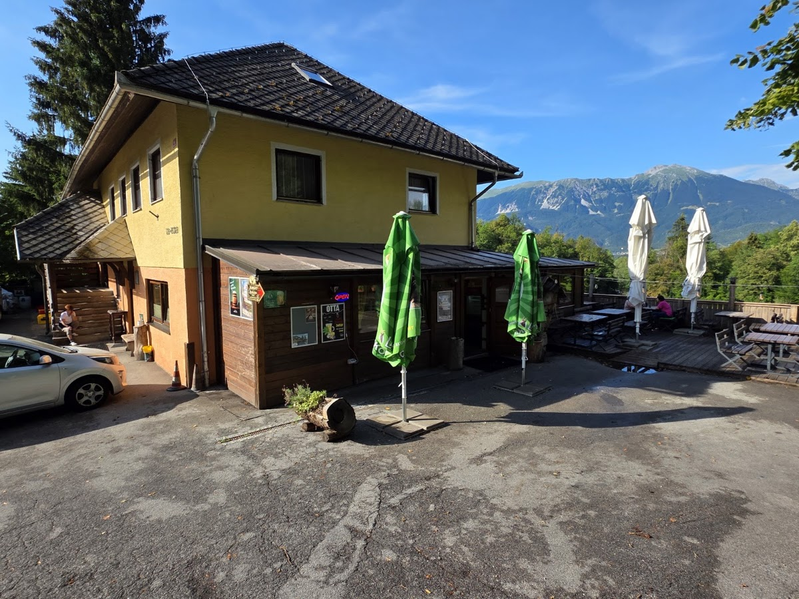
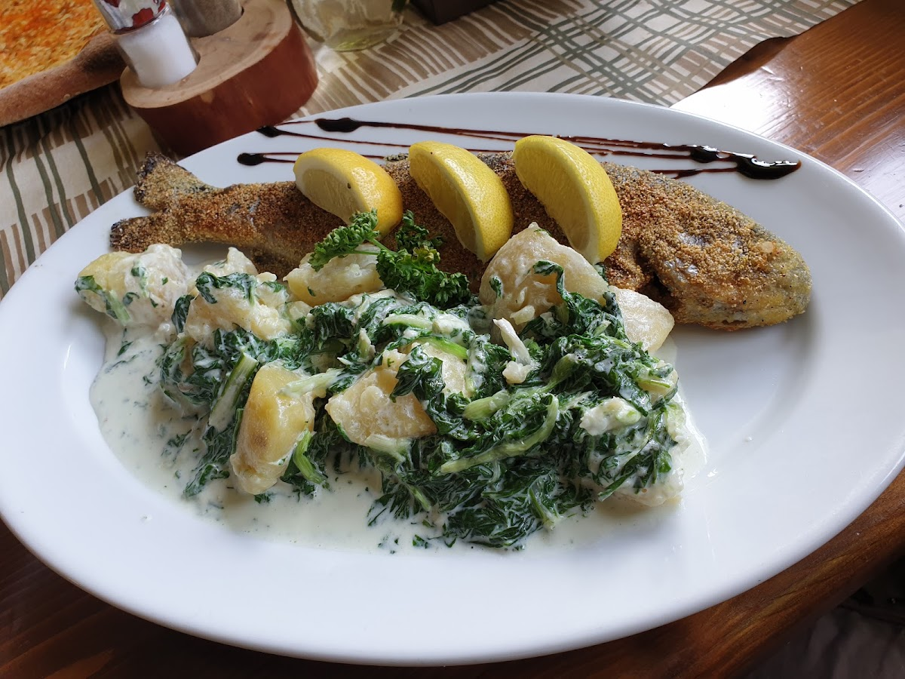
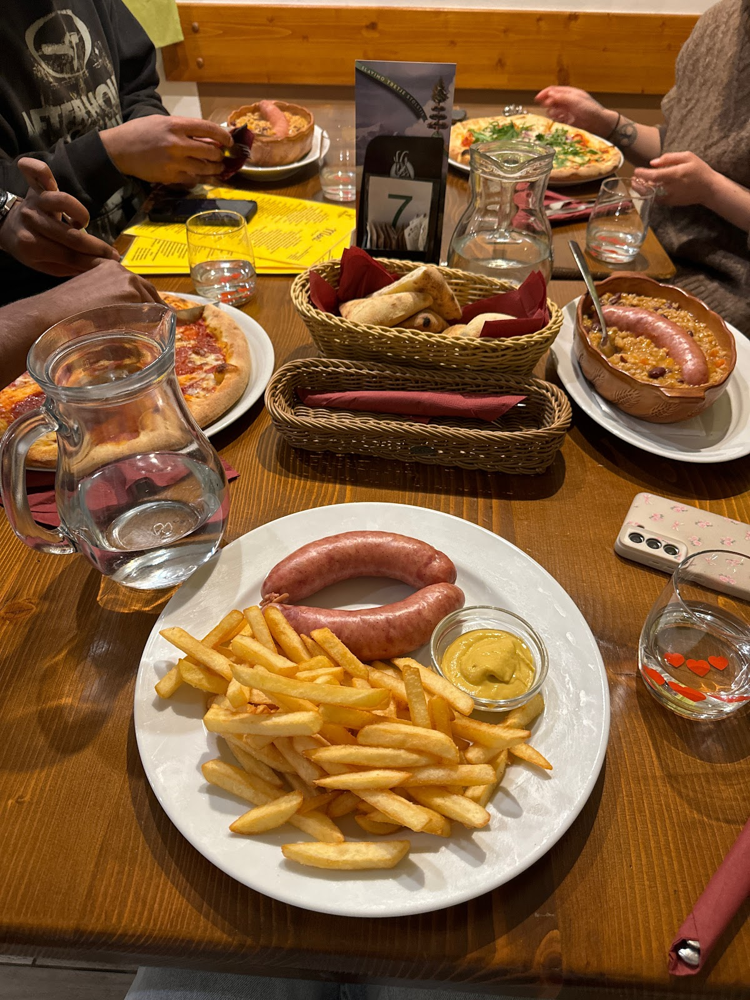
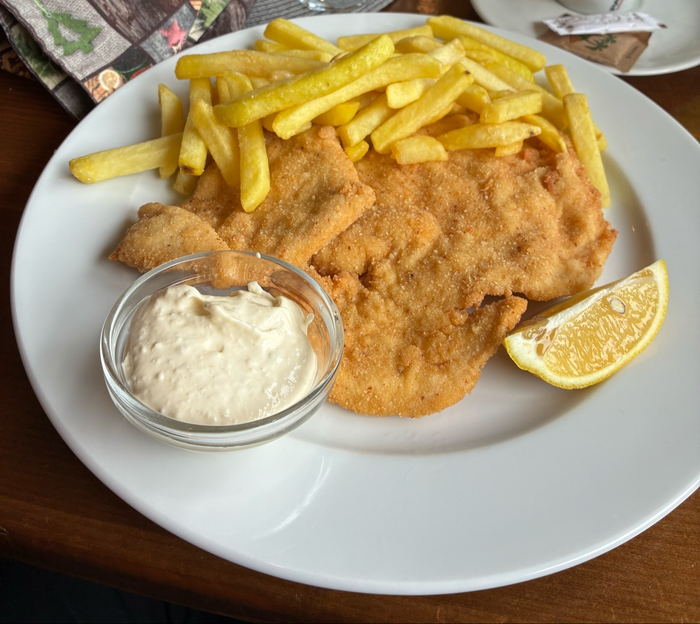
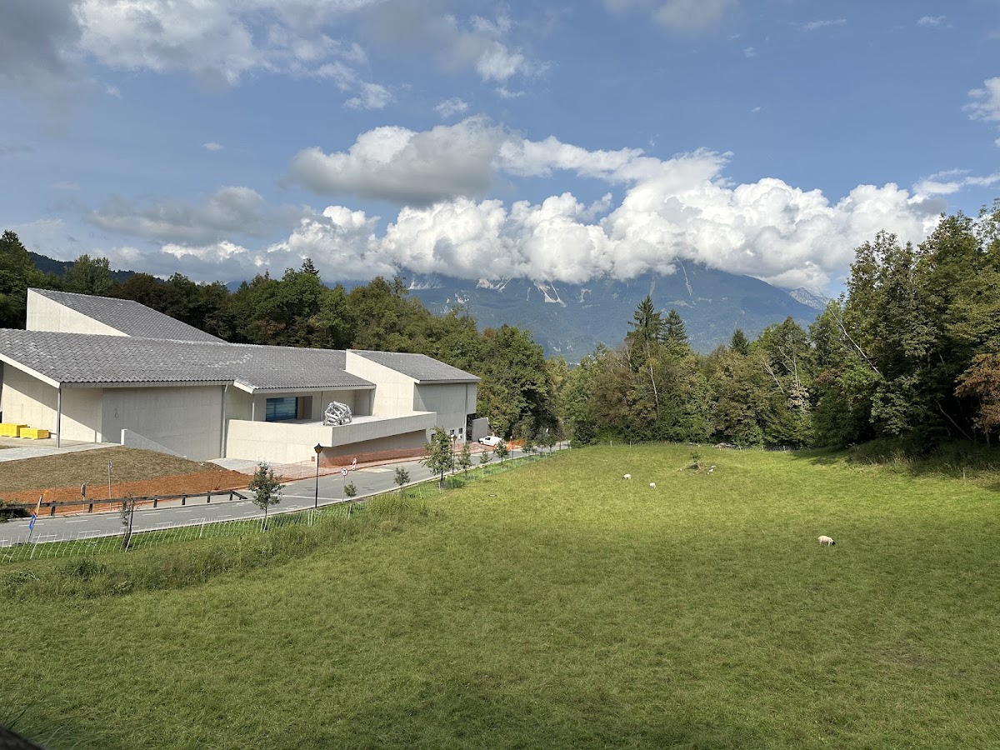
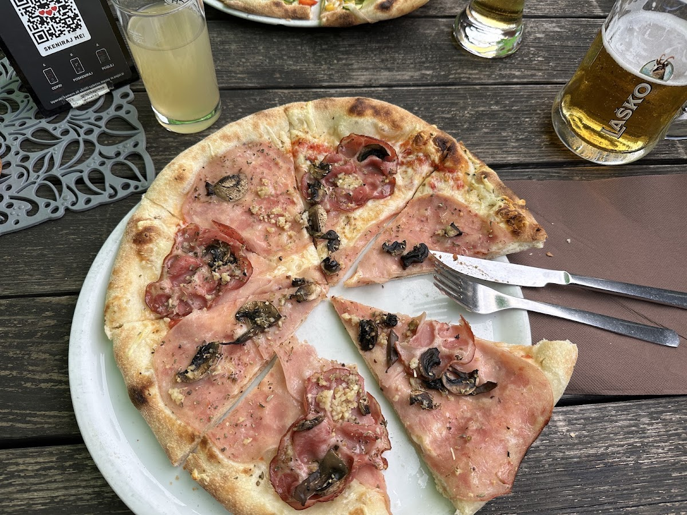

Zakaj k nam
O Grajski Preži
Velike porcije
Gostje večkrat izpostavijo, da so porcije res velike in primerne za tiste, ki so zelo lačni.
Pohvaljena hrana
Pice in druge jedi so pogosto opisane kot okusne in zadovoljive, še posebej med obiskovalci, ki cenijo raznolikost.
Zunanja terasa
Na voljo je terasa, kjer lahko gostje uživajo v zunanjem prostoru, čeprav je pogled delno zakrit.
O nas
O Grajski Preži
Grajska Preža Restaurant and Pizzeria na Bledu ponuja raznolike jedi, ki jih gostje pogosto pohvalijo zaradi velikih porcij in okusnih pic. Nekateri obiskovalci omenjajo prijazno postrežbo, drugi pa imajo različne izkušnje s storitvijo in ambientom. Terasa nudi pogled na okolico, čeprav je ta zdaj delno zakrit zaradi nove stavbe v bližini.
0591 20197
Kontakt
Rezervirajte ali povprašajte
Pokličite nas za več informacij ali da preverite zasedenost miz. Za vsa vprašanja smo dosegljivi na telefonu.
0591 20197


Lokacija
Lokacija v Bledu
Nahajamo se na Grajski cesti v Bledu. Terasa omogoča pogled na okolico, vendar je razgled zdaj delno zakrit zaradi nove stavbe. Okolica je mirna.
